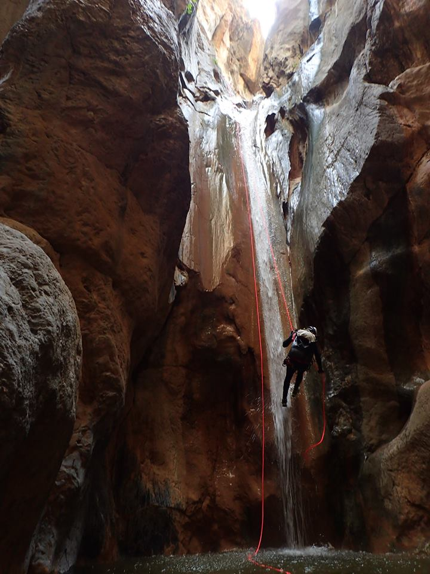

 Kavousi canyon, © Savas Paragamian 2017
Canyoning in Crete
Canyoning is the act of crossing canyons that would be inaccessible without the use of technical gear and abseiling (rappelling) with the use of a rope. Other techniques used include scrambling, climbing, jumping in pools with deep water, going down on natural slides and swimming.
The canyons in Crete are mainly dry and usually have water during spring, when the snow melts, or after heavy rainfalls during the autumn and winter. Carved on limestone, the canyons of Crete offer high descents and have their own wild character.
Below is a video of some canyons we visited during 2017.